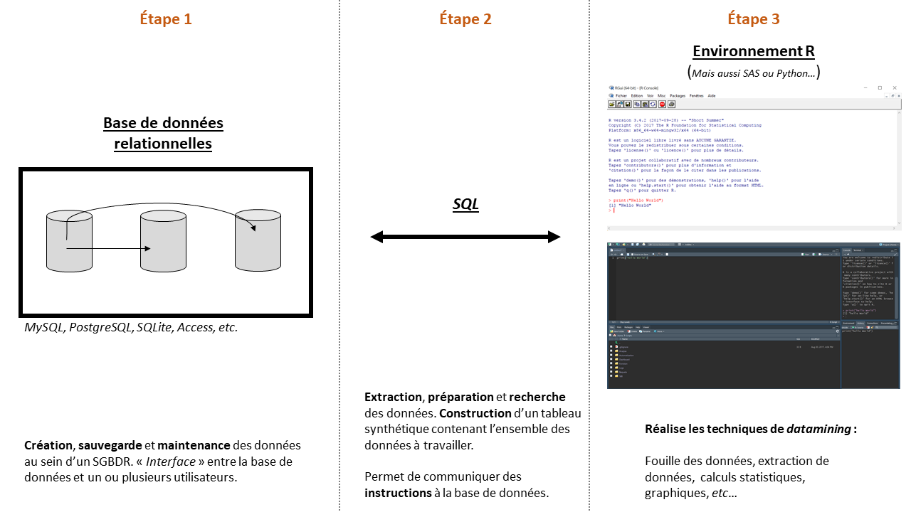
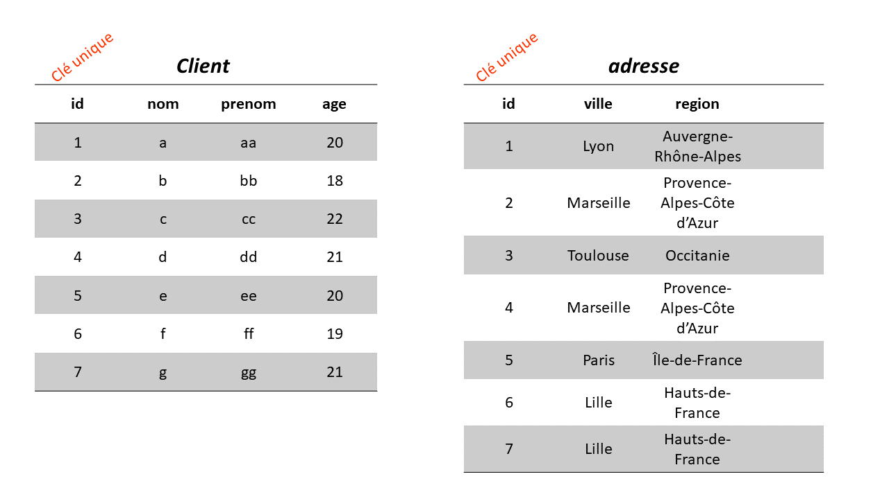
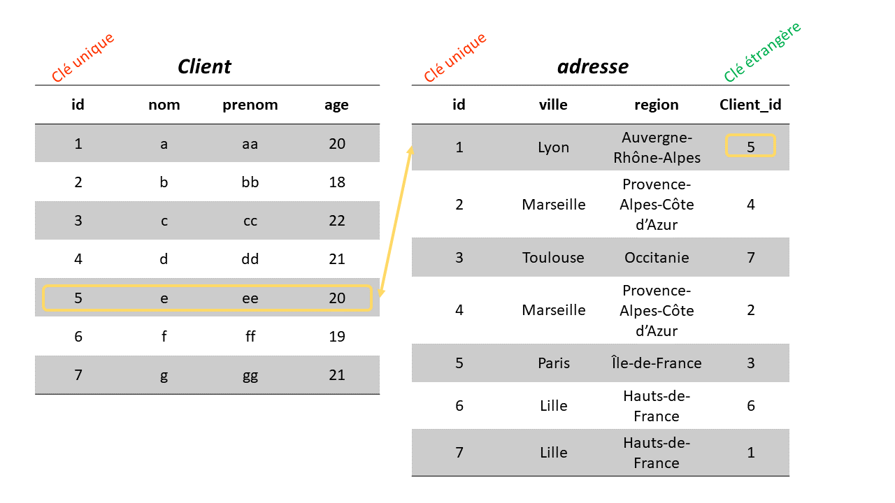

Les objectifs de ce cours sont de vous permettre de :
Apprendre le SQL
Utiliser SQL dans l’environnement R
Exploiter des BDD relationnelles
Vous familiarisez avec R
Et plus si affinités 😉
Faisons les présentations !
Mars 2016 à Déc. 2017
Janv. 2018 à Sept. 2021
Octobre 2021 à aujourd’hui
À vous
Qui êtes-vous ?
Avez-vous déjà pratiqué le SQL ?
Vers quel métier souhaitez-vous vous orienter ?
Quelles sont vos attentes de ce cours ?
Le SQL, c’est quoi ?
Structured Query Language
Le SQL est un langage informatique servant à exploiter des bases de données relationnelles.
Le SQL permet notamment de rechercher, d’ajouter, de modifier ou de supprimer des données.
Créé en 1974, le SQL est un langage de requêtes pour les bases de données.
La composition du SQL
Il existe plusieurs formes d’instructions du langage SQL :
Contrôle de données : Permettent de gérer les autorisations d’accès aux données.
Contrôle des transactions : Permettent de confirmer ou annuler une transaction.
Définition des données : Permettent de décrire et de modifier la structure et les caractéristiques de base.
Manipulation des données : Permettent de manipuler, ajouter ou supprimer des données.
Utiliser le SQL permet de manipuler, d’extraire et de regrouper les données dans une base afin de les rendre exploitables dans R.
Concrètement, comment cela s’articule ?

Une base de données ?
Une base de données est un ensemble de données stockées qui permet de sauvegarder des informations ou une activité. Ces informations sont stockées dans plusieurs tables (ou tableaux).
C’est l’élément central d’un système d’information. La base de données contient les informations clients d’une entreprise.
Le fichier client est la valeur d’une entreprise, c’est un actif immatériel.
Les données sauvegardées dans les tables sont consultables et exploitables.
Mais c’est quoi une table ?
Une table est tableau qui contient des données. Dans une table, une colonne contient une information (des noms, des prénoms, des dates, etc.). Les lignes elles, contiennent des enregistrements (individu 1, individu2, etc.).
Une table regroupe des informations sur un domaine bien précis !
Tout ce qui concerne les clients est enregistré dans une table client, des coordonnées dans une table adresse.
Primary Key (clé primaire)
Chaque table contient un identifiant. Contenu dans une colonne, cet identifiant est unique ! Un identifiant peut s’auto-incrémenter ou bien être un élément unique (email, numéro de sécurité sociale)
Cet identifiant permet d’avoir une table bien indexée, ce qui facilite notamment les recherches. Mais surtout, cette clé primaire permet de relier les tables entre elles !
Foreign Key (clé étrangère)
On parle d’une base de données relationnelle quand il existe des relations entre les tables.
Par exemple, nous pouvons trouver des informations relatives à une ligne de la table client dans celle de la table adresse. En somme, trouver l’adresse d’un client.
Ce lien existe grâce à la relation entre la clé primaire et la clé étrangère.
La clé étrangère est une colonne d’une table (adresse) qui fait référence à la colonne, clé primaire, d’une autre table (client).


Système de Gestion de Base de Données
Une table stocke des données.
Mais qui stocke donc les tables ?
C’est le rôle du Système de Gestion de Base de Données (SGBD).
Le SGBD permet :
le stockage,
la mise à jour,
la partageabilité des données,
la maintenance des données.
Le choix du SGBD dépend principalement de ses objectifs.
Les plus répandus sont : MySQL, PostgreSQL, MongoDB, SQLite, etc.
Avant de commencer !
En SQL, l’ordre des instructions est important !
⚠️ Deux régles d’écriture à respecter au maximum :
Écrire les instructions SQL en majuscule.
Indenter son code.
R + SQL !
Interroger des SGBD
Il existe plusieurs packages pour requêter des SGBD depuis R.
Parmi eux, nous retrouvons :
{RMySQL} pour se connecter sur MySQL et MariaDB.
{RPostgreSQL} pour se connecter sur Postgres et Redshift.
{RSQLite} pour interroger les bases SQLite.
Mais aussi les packages comme {odbc} ou encore {bigrquery}.
Le package {RSQLite}
Dans R, le package {RSQLite} permet d’interroger des bases de données SQLite.
C’est le package parfait pour nous exercer aux instructions SQL depuis notre logiciel préféré ! 💪
Importation des données
Pour apprendre, nous utiliserons le jeu de données players.csv
Vous pouvez télécharger les données avec la commande suivante :